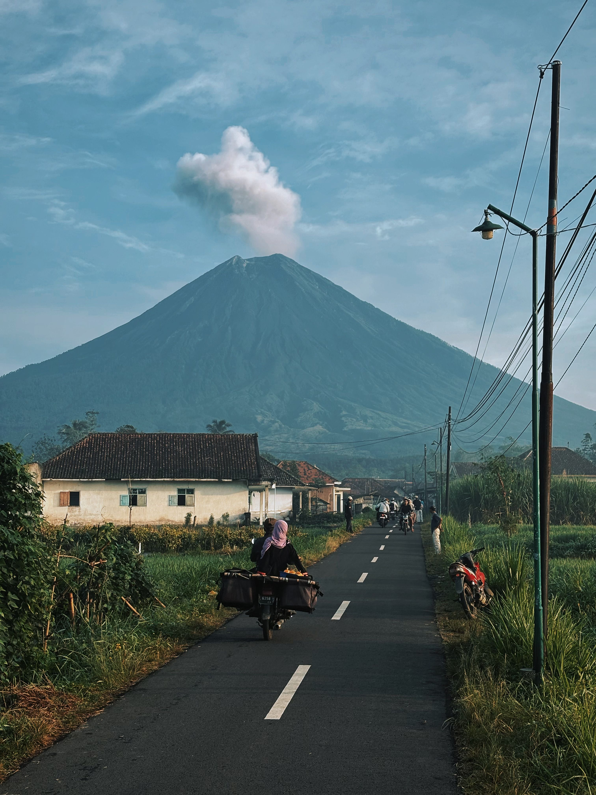
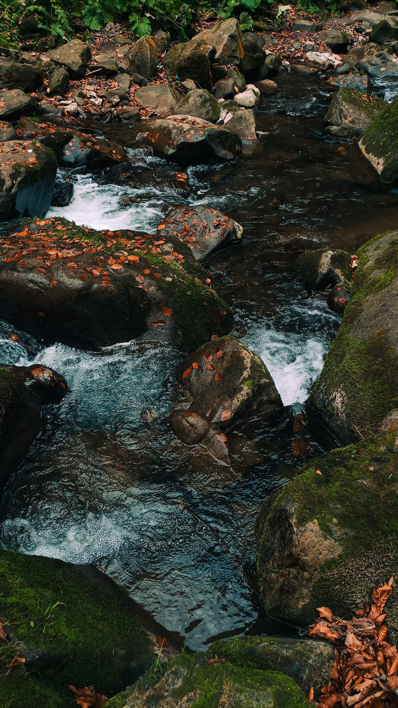
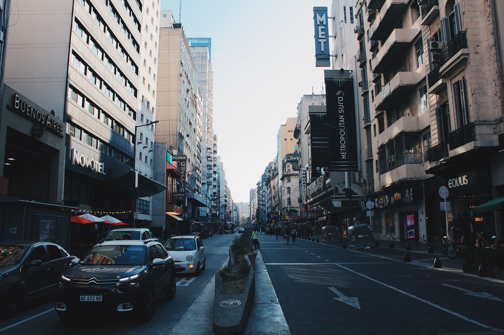
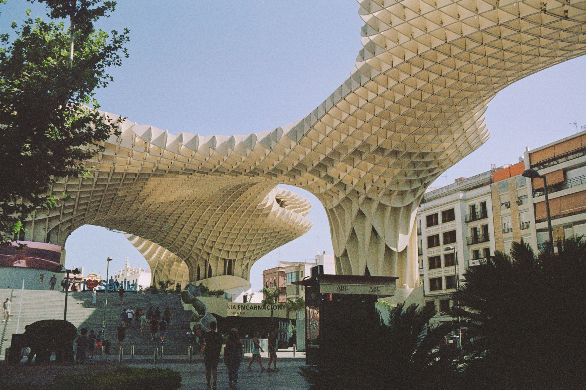
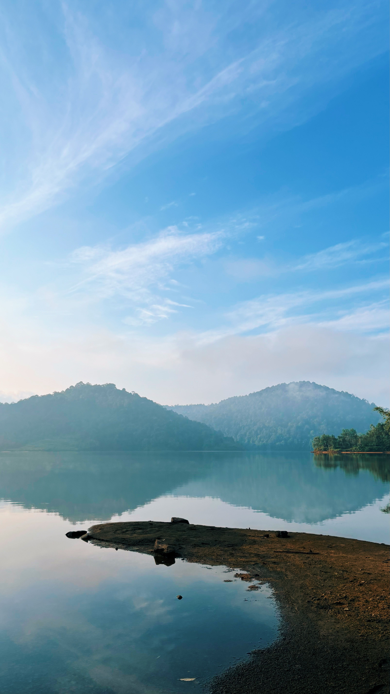

A tall white lighthouse stands watch on a grassy, wind-swept coastal
ridge under a pale blue sky.

Daily life unfolds on a quiet village road in East Java, Indonesia,
under the towering, active peak of Mount Semeru.
A fallen log rests over a calm stream surrounded by lush tree ferns
and dense forest vegetation.

Crisp mountain water cascades over moss-covered rocks strewn with
fallen autumn leaves.
A wild goat gazes curiously from behind a tree trunk in a lush
woodland setting.
Vibrant pastel houses cluster along the marina in Marina Corricella,
Procida, overlooking calm blue waters filled with fishing boats.

Cars navigate Avenida Corrientes, the iconic theater and cultural
avenue in downtown Buenos Aires, Argentina.

The soaring waffle-patterned timber structure of Metropol Parasol (Las
Setas de Sevilla) creates shade over La Encarnación square in Seville,
Spain.
Nature creates an optical illusion as interlocking tree trunks
naturally spell out the letter 'W' in a dense green forest.

Still waters mirror lush, misty hills under a clear blue sky on a
tranquil morning. Tranquil lake reflection with misty hills.